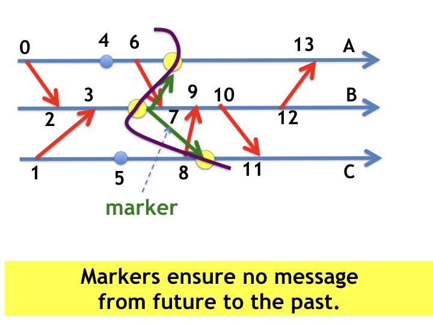
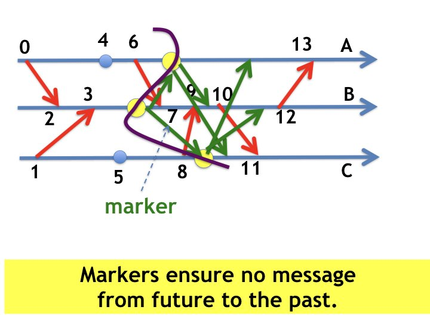
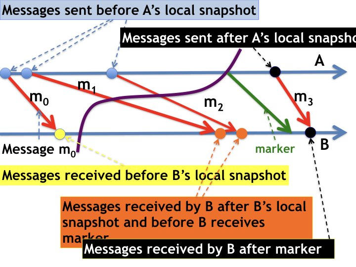

(1) Global snapshots: states at consistent cuts. (2) System
monitoring. (3) Detection algorithms.
A global snapshot is the state at a consistent cut.
Algorithms for obtaining global snapshots use marker or timestamp
messages so that messages sent in the past are received in the past.
Systems can be monitored by scheduling global snapshots at times \(t\) for
increasing \(t\).
System monitoring can be used to solve all detection problems -- for
example to detect whether agents deadlock or computations terminate.
Specification of a Global Snapshot
A global snapshot is any state \(S\) such that there exists a computation
that starts in the state in which the snapshot algorithm starts,
visits \(S\),
and later visits the state in which the snapshot algorithm ends.
A global snapshot algorithm determines a global state of the
system during a computation, without stopping or modifying the
computation.
The algorithm cannot, for instance, stop the distributed
computation, record the state (i.e., the snapshot), and then restart
the computation.
Let the states in which the algorithm starts and ends be
\(s_{init}\) and \(s_{fini}\), respectively, and let \(s_{snap}\) be
the global state (the snapshot) recorded by the algorithm.
The specification of \(s_{snap}\) is:
There exists a computation that starts in
\(s_{init}\) and then visits \(s_{snap}\) and later visits
\(s_{fini}\).
There may be an arbitary number of events between \(s_{init}\) and
\(s_{snap}\), and an arbitary number of events between \(s_{snap}\) and
\(s_{fini}\).
Though \(s_{snap}\) is determined while a computation
is running, \(s_{snap}\) may not have occurred in the computation. The
specification merely says that there exists a computation from
\(s_{init}\) through \(s_{snap}\) to \(s_{fini}\), and this
computation may not be the computation during which the snapshot is
taken.
What is the point of computing \(s_{snap}\) during a computation if
it never occurred in the computation? We will answer this question later.
A Global Snapshot is the State at a
Consistent Cut
From the theorem on
consistent cuts:
A global snapshot is the state of a system at a consistent cut of a
computation. So, let's design an algorithm by which agents
collaborate to determine a consistent cut.
Each agent takes its own local snapshot, i.e. records its own local
state, at a point in the computation.
Define past events to be the events at an
agent before the agent takes its own local snapshot.
Edges in an agent's timeline from events after the agent's snapshot
are (obviously) to events after the agent's snapshot.
Therefore the cut is consistent if it satisfies the
following condition:
Consistent cut requirement:
All messages sent after the sender takes its local snapshot
are received after the receiver takes its local snapshot.
Next, we use the consistent cut requirement to design a global
snapshot algorithm.
The algorithm employs a special type of message called a marker,
distinct from all other messages in the system.
Exactly one
marker is sent along each channel.
A Global Snapshot Algorithm
The algorithm begins by one or more agents taking their local
snapshots.
When an agent takes its local snapshot it sends a marker on each
of its outgoing channels.
When an agent receives a marker, the agent takes its local snapshot
if it has not already done so.
Proof: Algorithm satisfies the Consistent Cut
Requirement
A message sent after the sender
takes its local snapshot is sent after the sender sends
markers.
Because channels are first in first out, a message that is sent after
a marker is sent
is received after the marker is received.
When an agent receives a marker the agent takes its local snapshot if it hasn't done
so.
Therefore, a message sent after the sender
takes its local snapshot is received after the receiver takes its
local snapshot.
We assume that the directed graph of agents (vertices) and channels
(edges) is strongly connected, and so the algorithm sends a marker on
every channel, and every agent takes its local snapshot.
Example
Figure 1 illustrates the algorithm. In this example, there are three
agents -- A, B, and C -- and there is exactly one channel
from each agent to every other agent. When agent B takes its
snapshot it sends markers
to agents A and agents C. Markers are shown as green edges.
Agent C takes its snapshot when it receives the marker
which ensures that agent C's snapshot is before event 11.

Fig.1: Markers ensure cuts are consistent
When agents B and C receive markers they take their snapshots if they
haven't done so already, and send markers in their turn. These
markers are shown in the next figure.

Fig.2: Showing all Markers
Snapshots of Channels
Next we look at an algorithm to record snapshots (states) of channels
at a cut. The messages in the channel at a cut are the messages sent on the channel in the past and
received on the channel in the future.
When an agent takes its local snapshot it sends a marker on each of
its outgoing channels. So, messages sent along a channel in the past are
the messages sent on the channel before the marker is sent along the
channel.
Messages received in the future are the messages received after the
receiver takes its local snapshot.
Therefore:
The state of a channel at a cut is the sequence of messages
received along the channel after the receiver takes its local snapshot
and before the receiver receives a marker along the channel.
Note: If an agent takes its local snapshot when it receives a marker
along a channel, then the snapshot of the channel is the empty
sequence of messages.
Example: Channel Snapshot
A diagram that illustrates the process by which an agent gets a
snapshot of an incoming channel is shown below. The diagram shows the
timelines for two agents, \(A\) and \(B\).
Agent \(A\) sends messages \(m_{0}, m_{1}, m_{2}\), then sends a
marker (colored green), and then message \(m_{3}\), to agent \(B\) on a
channel \(x\). All the messages in the diagram are sent on the same
channel.
The events shown as blue circles on \(A\)'s timeline are
events in which \(A\) sends messages \(m_{0}, m_{1}, m_{2}\) before
\(A\) takes its local snapshot. The event shown as a black circle
shows \(A\) sending messages \(m_{3}\) after \(A\) takes its local
snapshot. The point at which \(A\) takes its local snapshot is the
point at which the purple wavy line (the cut) crosses \(A\)'s timeline.

Fig.7: Snapshot of a channel
The event shown as a yellow circle on \(B\)'s timeline represents the
event in which \(B\) receives messages \(m_{0}\) before \(B\) takes its
own snapshot. The events shown as orange circles represent events in
which \(B\) receives messages \(m_{1}, m_{2}\) after \(B\) takes its
own snapshot and before \(B\) receives the marker. The black event
represents \(B\) receiving message \(m_{3}\) after \(B\) takes its
snapshot.
The messages that \(A\) sent in the past are \(m_{0}, m_{1}, m_{2}\).
The messages that \(B\) receives in the future are \(m_{1}, m_{2},
m_{3}, \ldots\).
The state of the channel, at the cut, is the sequence of messages \([m_{1},
m_{2}]\) that \(A\) sent in the past and that \(B\) receives in the
future.
This is shown as the sequence of red message lines that
cross the wavy purple line which represents the global snapshot.
These are the messages that \(B\) receives after it takes its local
snapshot and before it receives the marker.
Collecting Local Agent and Channel
Snapshots
Each agent takes its own local snapshot and the snapshots of its
incoming channels.
Some applications require a single agent to collect local
snapshots to form a global snapshot while other applications carry out
computations on local snapshots.
Algorithms that detect system properties by analyzing local snapshots
are given later.
Monitoring Systems by Scheduling Snapshots
Sequences of checkpoints taken repeatedly at scheduled times
(cron jobs)
help in monitoring systems.
A checkpoint of a distributed system is a global snapshot, and
scheduling repeated snapshots helps in many applications including
monitoring.
The global snapshot taken
at time \(T\) is assigned timestamp \(T\) to
distinguish it from snapshots taken at other times.
The algorithm to get the snapshot at time
\(T\) is identical to the marker algorithm except that markers and
snapshots are assigned timestamp \(T\).
Algorithm to get the Snapshot at time \(T\)
All snapshots and markers in the algorithm below have timestamp
\(T\).
When an agent's clock reaches \(T\) the agent takes its local snapshot and sends
markers on all its output channels.
When an agent receives a marker with timestamp \(T\), if the agent's
local clock is earlier than \(T\) then the agent moves its local
clock forward to \(T\), and (rule 1) the agent takes its local
snapshot and sends markers on all its output channels.
Channel snapshots are computed as in the marker algorithm.
System Monitoring
Algorithms that schedule snapshots at \(T\) for increasing values of
\(T\) are system monitoring algorithms.
Agents clocks with a standard time server, such as
NTP, to ensure that the times at which snapshots are taken are close
to the true schedules times.
Applications of Snapshots
Next we give a few examples of snapshot applications.
Rollback and Recovery
If an error is detected during the execution of a computation then a
rollback and recover algorithm rolls the computation back to the most
recent checkpoint (global snapshot) and restarts the computation from
that point.
The Detection Problem
The detection problem is to design an algorithm that detects
whether a computation is in a stable set of
states.
Stable set of States
A stable set of states is a set \(P\) such that every transition from a
state in \(P\) is to a state in \(P\). There is no transition from
inside \(P\) to outside \(P\), and so after a computation visits a
state in \(P\) the computation remains forever in \(P\). The set of
states in which agents are deadlocked is an example of a stable set:
there is no transition from a deadlocked state to a non-deadlocked
state.
Global Snapshots and State Detection
Let's look again at the specification of a global snapshot.
Let \(S_{init}\) and \(S_{fini}\) be the states of the computation at
which the snapshot algorithm starts and ends, respectively and let
\(S_{snap}\) be snapshot obtained by the algorithm. There exists a computation that
visits \(S_{init}\), later visits \(S_{snap}\) and then later visits
\(S_{fini}\). So, for any stable set \(P\), if \(S_{init}\) is in
\(P\) then so is \(S_{snap}\). Likewise, if \(S_{snap}\) is in \(P\)
then so is \(S_{fini}\).
Property of Global Snapshots
For any stable set \(P\) of states:
If the snapshot algorithm starts when the system is in \(P\)
then the snapshot is in \(P\).
If the snapshot is in \(P\) then system is in \(P\) when the
snapshot algorithm ends.
What do we know about the snapshot if the snapshot algorithm is
initiated when the system is outside a stable set \(P\) and enters
\(P\) while the snapshot algorithm is still running? In this case, the
specification doesn't tell us whether the snapshot will be in \(P\) or
not.
If the snapshot is in \(P\) then the system is in \(P\) when the
snapshot algorithm ends. If the snapshot is not in \(P\) then
the system is not in \(P\) when the snapshot algorithm begins,
but we don't know whether the system is in \(P\) when the snapshot
algorithm ends.
If a snapshot is not in \(P\) then more
snapshots must be taken to detect whether the system may have entered
\(P\) after the last snapshot was initiated.
A general method to detect whether a system is in a stable set of
states is to monitor the system by scheduling repeated snapshots.
System Monitoring Solves All Detection
Problems
System monitors take
global snapshots repeatedly -- for example at scheduled times.
If the system state at any point in a computation is in a stable set \(P\)
then a later snapshot will be in \(P\).
And if any snapshot is in
\(P\) then the system state at that point is in \(P\).
Examples of Detection Problems
System monitoring can be used to solve all detection problems
including those that detect whether:
computation has terminated,
computation has deadlocked,
amount of crypto coins exceeds a constant \(n\), assuming the
coins aren't destroyed
clocks of all agents exceed a constant \(t\), assuming that
clocks don't go backward.
There may, however, be more efficient solutions for specific problems.
We discuss some of these problems in the following pages.
Specification of Detection Algorithms
A detection algorithm detects whether the state of a computation is in
a stable set \(P\). The algorithm uses a Boolean variable \(B\) which
is initially False and which is set to True when
the algorithm detects that the system is in \(P\) and remains True.
Once \(B\) becomes True it remains True forever thereafter. The
specification is:
If at any point in a computation the system state is in \(P\) then
there is a point in the computation after which \(B\) remains True.
If \(B = True\) at any point in a computation then the system state
at that point is in \(P\).
Next, we look at different detection algorithms that detect
different stable sets. Detection algorithms, regardless
of application, are similar.
Central Ideas: Review
A global snapshot is the state at a consistent cut.
Global snapshots can be obtained by
taking a snapshot at timestamp \(T\) and the marker
algorithm.
Detection algorithms detect when the system state is in a stable set
of states.
System monitors that take repeated scheduled snapshots can be used to solve
detection problems.